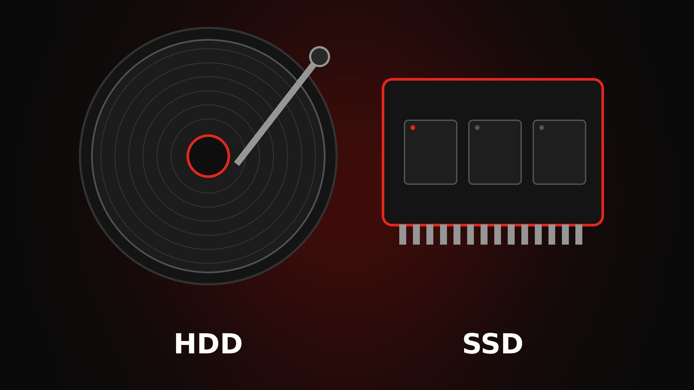

SSD o disco rígido: cuál te conviene

Cambiar el disco es la mejora que más se nota en una PC lenta.
Qué es cada uno
El disco rígido (HDD) guarda datos en platos giratorios. El SSD usa memoria flash, sin partes móviles, y por eso es mucho más rápido, silencioso y resistente a golpes.
Cuándo elegir SSD
- Para instalar Windows y tus programas: la PC arranca en segundos.
- En notebooks, por menor consumo y resistencia.
- Si trabajás con programas pesados o juegos.
Cuándo sirve un HDD
Para guardar muchos archivos (fotos, videos, backups) a menor costo por gigabyte. Una combinación muy usada es un SSD para el sistema y un HDD para almacenamiento.
Consejo: si tu PC es lenta y todavía usa disco rígido, cambiarlo por un SSD suele ser la mejora más rentable.
¿Necesitás ayuda con tu equipo?
Escribinos por WhatsApp y te asesoramos sin compromiso.
Consultar por WhatsApp